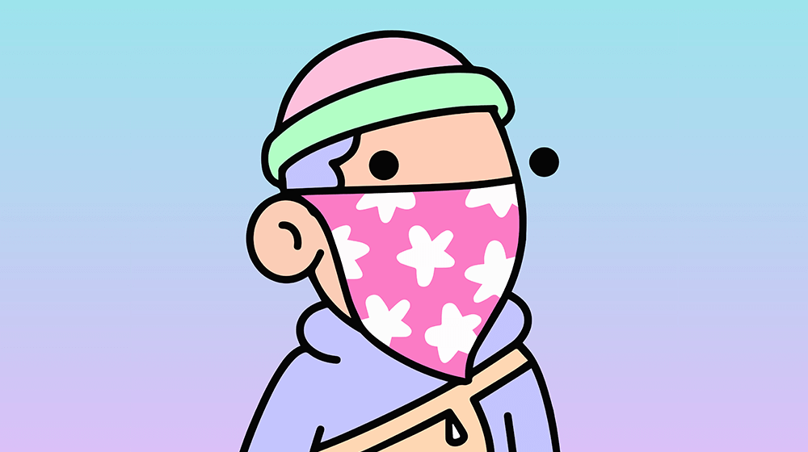
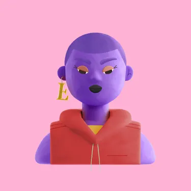
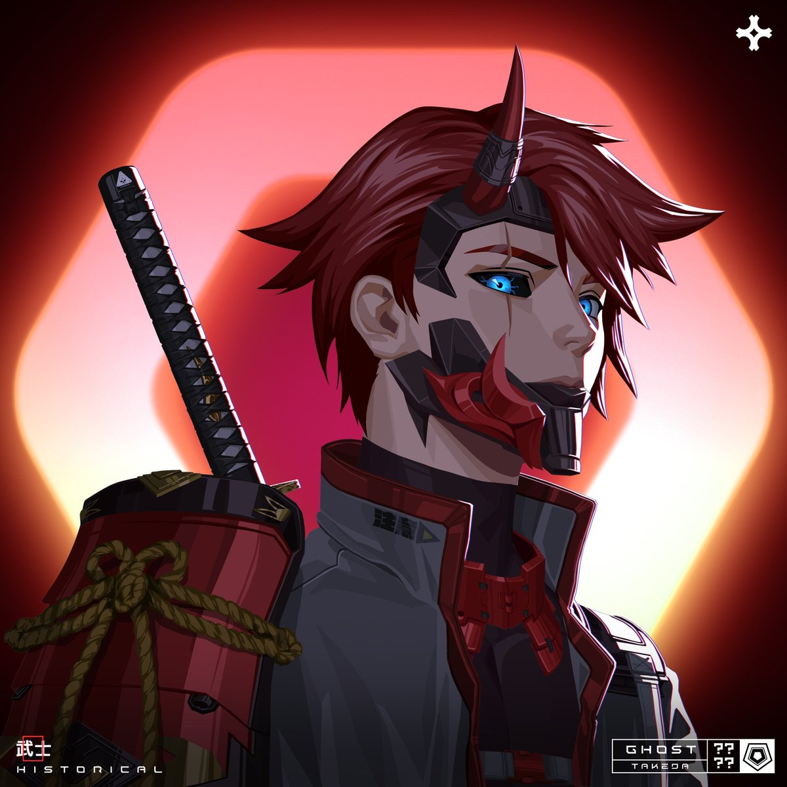

Welcome to Instamint
The platform for minting, buying, and selling NFTs.
Featured Collections
Discover the latest collections from our featured creators.

Collection 1
Creator: John Doe
Collection 2
Creator: Jane Smith

Collection 3
Creator: Bob Johnson
Popular Creators
Discover the best creators on Instamint.

Creator 1
100 Followers
Creator 2
200 Followers
Creator 3
300 Followers